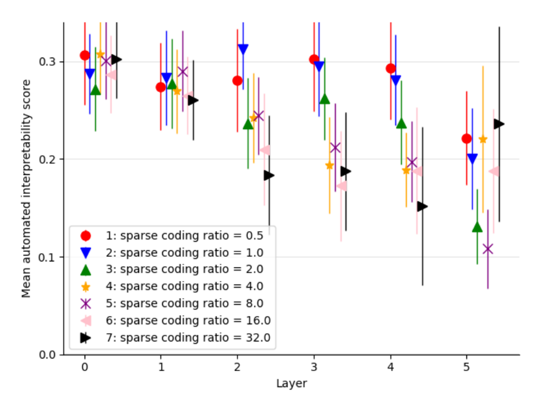

Interpretability by layer across seven dictionary sizes

Reading the plot
The x-axis is the residual-stream layer (0 through 5) an autoencoder was trained on; the y-axis is its mean autointerpretability score, averaged over many features, with a vertical bar showing the uncertainty around that mean. Color and marker shape encode the dictionary's expansion factor $R$, swept across seven values from 0.5, which is smaller than the underlying activation dimension, up to 32, far overcomplete. Each point is one (layer, $R$) combination's mean score. It is tempting to expect the largest dictionaries, with the most feature capacity, to score best throughout. The plot does not show that ranking: score depends far more on layer than on dictionary size, and the smallest dictionary tested scores comparably to, and at some layers above, dictionaries dozens of times larger.
What the plot shows
All seven ratios decline over roughly the same range, from about 0.27-0.31 at layer 0 down to about 0.11-0.24 at layer 5, echoing a layer-wise decline the paper documents elsewhere. The ratios spread out most at layer 5: the two largest dictionaries hold up best there, while two of the mid-sized ratios fall furthest. The point of the sweep is that this is not a size effect: even the smallest, undercomplete dictionary reaches interpretability scores in the same range as dictionaries far larger, showing the interpretability gain is not confined to overcomplete dictionaries (sparse-autoencoders, §"C.1 INTERPRETABILITY IS CONSISTENT ACROSS DICTIONARY SIZES", p. 13).
Context
A separate quantity, how much of a layer's total activation variance the dictionary reconstructs, does scale with Dictionary expansion factor (R) -- larger dictionaries explain more of the whole, even though, per this plot, no single Dictionary feature is on average more interpretable in a larger dictionary than a smaller one. The underlying metric is the Autointerpretability score.